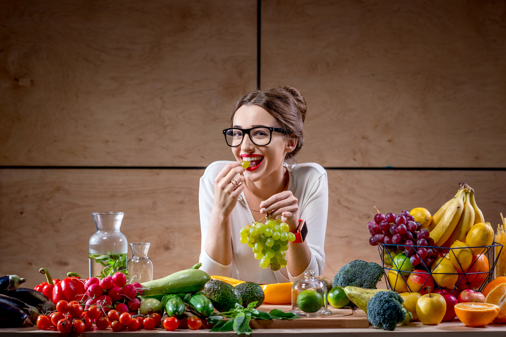

BLOG - BENEFITS OF ORGANIC FOODS
17 December 2022
The term “organic food” or “organic products'' refers to the way agricultural products and livestock are grown, raised, and processed. Organic agriculture is different from the conventional way of farming.
Organic products are fresher
Organic products are much fresher than regular, conventional products. The reason for that is that non-organic products are infused with preservatives that make them last longer. But organic produce doesn’t have any of that, which means it’s fresher. So, that’s one of the best benefits of eating an organic diet
No antibiotics are used in organic products
Non-organic foods (livestock specifically) often have antibiotics in them. When humans consume that food that has antibiotics in it, humans also end up consuming the antibiotics. That can create antibiotic-resistant strains of bacteria, which can alter the human’s immune system, and make them not be able to fight diseases. But when you eat organic products, there are no antibiotics added to that, so it’s completely safe to eat
Organic products are better for the environment
Organic farms use less energy, they pollute the environment a lot less than conventional farms, they conserve water more, increase soil fertility, and reduce soil erosion. Farms that use synthetic pesticides can cause damage to people living nearby, as well as to birds and animals, so organic farms are safer for everyone, since they don’t use any pesticides.
Organic products taste better
Organic products taste much better than non-organic products. They have more nutrients, and the mineral and sugar structures in them are much tastier, because they had time to develop and mature naturally, and no artificial chemicals were added to them
With organic fruits and vegetables, you’re getting the real and full taste of the product, not an altered one. The quality of the flavors in organic fruits and vegetables is so much higher than in non-organic ones
Organic products are free of pesticides
Pesticides can be very harmful to humans. While they are good for keeping pests away from fruit and vegetables, they are unnatural chemicals and shouldn’t be consumed by humans. Almost all non-organic fruit and vegetables have pesticides, and some even with very high levels of pesticide, which makes them potentially harmful to consumers. Even small amounts of pesticide residue can be harmful if you consume it for every single meal (if all of your produce has pesticie residue)
On the other hand, organic products are pesticide-free, which makes them healthier and much safer to consume.